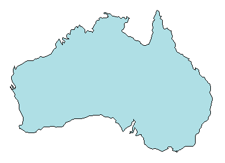
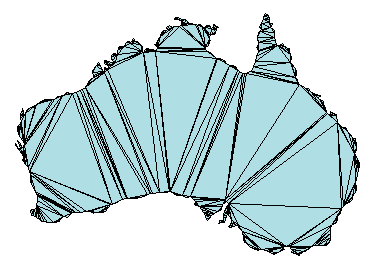
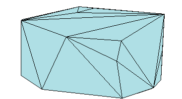
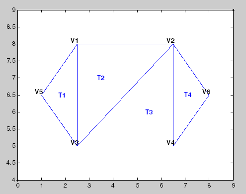
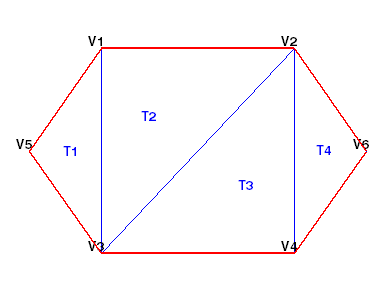

Triangulation Representations
2-D and 3-D Domains
Triangulations are often used to represent 2-D and 3-D geometric domains in application areas such as computer graphics, physical modeling, geographic information systems, medical imaging, and more. The map polygon shown here

can be represented by the triangulation on the map shown below.

The triangulation decomposes a complex polygon into a collection of simpler triangular polygons. You can use these polygons for developing geometric-based algorithms or graphics applications.
Similarly, you can represent the boundary of a 3-D geometric domain using a triangulation. The figure below shows the convex hull of a set of points in 3-D space. Each facet of the hull is a triangle.

Triangulation Matrix Format
MATLAB® uses a matrix format to represent triangulations. This format has two parts:
The vertices, represented as a matrix in which each row contains the coordinates of a point in the triangulation.
The triangulation connectivity, represented as a matrix in which each row defines a triangle or tetrahedron.
This figure shows a simple 2-D triangulation.

The following table shows the vertex information.
| Vertices | ||
|---|---|---|
| Vertex ID | x-coordinate | y-coordinate |
| V1 | 2.5 | 8.0 |
| V2 | 6.5 | 8.0 |
| V3 | 2.5 | 5.0 |
| V4 | 6.5 | 5.0 |
| V5 | 1.0 | 6.5 |
| V6 | 8.0 | 6.5 |
The data in the previous table is stored as a matrix in the MATLAB environment. The vertex IDs are labels used for identifying specific vertices. They are shown to illustrate the concept of a vertex ID, but they are not stored explicitly. Instead, the row numbers of the matrix serve as the vertex IDs.
The triangulation connectivity data is shown in this table.
| Connectivity | |||
|---|---|---|---|
| Triangle ID | IDs of Bounding Vertices | ||
| T1 | 5 | 3 | 1 |
| T2 | 3 | 2 | 1 |
| T3 | 3 | 4 | 2 |
| T4 | 4 | 6 | 2 |
The data in this table is stored as a matrix in the MATLAB environment. The triangle IDs are labels used for identifying specific triangles. They are shown to illustrate the concept of a triangle ID, but they are not stored explicitly. Instead, the row numbers of the matrix serve as the triangle IDs.
You can see that triangle T1 is defined by
three vertices, {V5, V3, V1}. Similarly, T4 is
defined by the vertices, {V4, V6, V2}. This format
extends naturally to higher dimensions, which require additional columns
of data. For example, a tetrahedron in 3-D space is defined by four
vertices, each of which have three coordinates, (x, y, z).
You can represent and query the following types of triangulations using MATLAB:
2-D triangulations consisting of triangles bounded by vertices and edges
3-D surface triangulations consisting of triangles bounded by vertices and edges
3-D triangulations consisting of tetrahedra bounded by vertices, edges, and faces
Querying Triangulations Using the triangulation Class
The matrix format provides a compact low-level, array-based representation for triangulations. When you use triangulations to develop algorithms, you might need more information about the geometric properties, topology, and adjacency information.
For example, you might compute the triangle incenters before plotting the annotated triangulation shown below. In this case, you use the incenters to display the triangle labels (T1, T2, etc.) within each triangle. If you want to plot the boundary in red, you need to determine the edges that are referenced by only one triangle.

The triangulation Class
You can use triangulation to
create an in-memory representation of any 2-D or 3-D triangulation
data that is in matrix format, such as the matrix output from the delaunay function or other software tools.
When your data is represented using triangulation,
you can perform topological and geometric queries, which you can use
to develop geometric algorithms. For example, you can find the triangles
or tetrahedra attached to a vertex, those that share an edge, their
circumcenters, and other features.
You can create a triangulation in one of two
ways:
Pass existing data that you have in matrix format to
triangulation. This data can be the output from a MATLAB function, such asdelaunayorconvhull. You also can import triangulation data that was created by another software application. When you work with imported data, be sure the connectivity data references the vertex array using 1-based indexing instead of 0-based indexing.Pass a set of points to
delaunayTriangulation. The resulting Delaunay triangulation is a special kind oftriangulation. This means you can perform anytriangulationquery on your data, as well as any Delaunay-specific query. In more formal MATLAB language terms,delaunayTriangulationis a subclass oftriangulation.
Creating a triangulation from Matrix Data
This example shows how to use the triangulation matrix data to create a triangulation, explore what it is, and explore what it can do.
Create a matrix, P, that contains the vertex data.
P = [ 2.5 8.0
6.5 8.0
2.5 5.0
6.5 5.0
1.0 6.5
8.0 6.5];Define the connectivity, T.
T = [5 3 1;
3 2 1;
3 4 2;
4 6 2];Create a triangulation from this data.
TR = triangulation(T,P)
TR =
triangulation with properties:
Points: [6×2 double]
ConnectivityList: [4×3 double]
Access the properties in a triangulation in the same way you access the fields of a struct. For example, examine the Points property, which contains the coordinates of the vertices.
TR.Points
ans = 6×2
2.5000 8.0000
6.5000 8.0000
2.5000 5.0000
6.5000 5.0000
1.0000 6.5000
8.0000 6.5000
Next, examine the connectivity.
TR.ConnectivityList
ans = 4×3
5 3 1
3 2 1
3 4 2
4 6 2
The Points and ConnectivityList properties define the matrix data for the triangulation.
The triangulation class is a wrapper around the matrix data. The real benefit is the usefulness of the triangulation class methods. The methods are like functions that accept a triangulation and other relevant input data.
The triangulation class provides an easy way to index into the ConnectivityList property matrix. Access the first triangle in the triangulation.
TR.ConnectivityList(1,:)
ans = 1×3
5 3 1
Another way of getting the first triangle is TR(1,:).
Examine the first vertex of the first triangle.
TR(1,1)
ans = 5
Examine the second vertex of the first triangle.
TR(1,2)
ans = 3
Now, examine all the triangles in the triangulation.
TR(:,:)
ans = 4×3
5 3 1
3 2 1
3 4 2
4 6 2
Use triplot to plot the triangulation. The triplot function is not a triangulation method, but it accepts and can plot a triangulation.
figure
triplot(TR)
axis equal
Use the triangulation method, freeBoundary, to query the free boundary and highlight it in a plot. This method returns the edges of the triangulation that are shared by only one triangle. The returned edges are expressed in terms of the vertex IDs.
boundaryedges = freeBoundary(TR)';
Now plot the boundary edges as a red line.
hold on plot(P(boundaryedges,1),P(boundaryedges,2),'-r','LineWidth',2) hold off

You can use the freeBoundary method to validate a triangulation. For example, if you observed red edges in the interior of the triangulation, then it would indicate a problem in how the triangles are connected.
Creating a triangulation Using delaunayTriangulation
This example shows how to create a Delaunay triangulation using delaunayTriangulation.
When you create a Delaunay triangulation using the delaunayTriangulation class, you automatically get access to the triangulation methods because delaunayTriangulation is a subclass of triangulation.
Create a delaunayTriangulation from a set of points.
P = [ 2.5 8.0
6.5 8.0
2.5 5.0
6.5 5.0
1.0 6.5
8.0 6.5];
DT = delaunayTriangulation(P)DT =
delaunayTriangulation with properties:
Points: [6×2 double]
ConnectivityList: [4×3 double]
Constraints: []
The resulting delaunayTriangulation object has the properties, Points and ConnectivityList, just like a triangulation object.
You can access the triangulation using direct indexing, just like triangulation. For example, examine the connectivity of the first triangle.
DT(1,:)
ans = 1×3
5 3 1
Next, examine the connectivity of the entire triangulation.
DT(:,:)
ans = 4×3
5 3 1
3 4 1
1 4 2
2 4 6
Use the triplot function to plot the triangulation.
triplot(DT)
axis equal
The parent class, triangulation, provides the incenter method to compute the incenters of each triangle.
IC = incenter(DT)
IC = 4×2
1.8787 6.5000
3.5000 6.0000
5.5000 7.0000
7.1213 6.5000
The returned value, IC, is an array of coordinates representing the incenters of the triangles.
Now, use the incenters to find the positions for placing triangle labels on the plot.
hold on numtri = size(DT,1); trilabels = arrayfun(@(P) {sprintf('T%d', P)}, (1:numtri)'); Htl = text(IC(:,1),IC(:,2),trilabels,'FontWeight','bold', ... 'HorizontalAlignment','center','Color','blue'); hold off

Instead of creating a Delaunay triangulation using delaunayTriangulation, you could use the delaunay function to create the triangulation connectivity data, and then pass the connectivity data to triangulation. For example,
P = [ 2.5 8.0
6.5 8.0
2.5 5.0
6.5 5.0
1.0 6.5
8.0 6.5];
T = delaunay(P);
TR = triangulation(T,P);
IC = incenter(TR);Both approaches are valid in this example, but if you want to create a Delaunay triangulation and perform queries on it, then you should use delaunayTriangulation for these reasons:
The
delaunayTriangulationclass provides additional methods that are useful for working with triangulations. For example, you can to perform nearest-neighbor and point-in-triangle searches.It allows you to edit the triangulation to add, move, or remove points.
It allows you to create constrained Delaunay triangulations. This allows you to create a triangulation for a 2-D domain.
See Also
delaunay | delaunayTriangulation | freeBoundary | triangulation | triplot